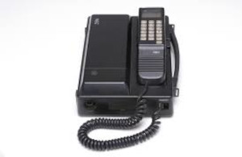

História De Seu Desenvolvimento
A Motorola iniciou suas atividades em Chicago, Illinois, como Galvin Manufacturing Corporation em 1928, quando os irmãos Paul V. Galvin e Joseph E. Galvin compraram o projeto e o maquinário da falida empresa Stewart Battery Company, especializada na fabricação de eliminadores de bateria. Após ter perdido 4,3 bilhões de dólares entre 2007 e 2009, a empresa foi dividida em duas empresas públicas independentes, a Motorola Mobility e a Motorola Solutions em 4 de janeiro de 2011. A Motorola Solutions é considerada a sucessora direta da Motorola, Inc., sendo que a reorganização foi estruturada com a separação da Motorola Mobility da empresa.
Sua Primeira Versão
Todas essas pesquisas levaram o engenheiro Martin Cooper, em 3 de abril de 1973, a expor para todo o mundo sua invenção revolucionária: o Motorola Dynatac 8000X, primeiro telefone móvel comercialmente produzido. Por isso, ele ficou conhecido como "pai do celular"
O telefone custava à época de seu lançamento US$ 3 995,00. Possuí uma tela de LED e uma bateria relativamente grande, em forma de caixa. Funcionava na rede analógica, ou seja, NMT (Nordic Mobile Telephone), tendo sido descontinuado apenas em 1994.
Surge um Novo Celular
Depois do lançamento nos Estados Unidos do Motorola Dynatac 8000X, a tecnologia demorou a chegar no Brasil. O primeiro celular no Brasil, também lançado pela Motorola, foi o Motorola PT-550, em 1990. Conhecido como celular tijolão, tinha o estilo em flip com uma antena na parte de cima do aparelho.
No lançamento, ele custava entre 500 a 750 cruzados. A linha telefônica, por sua vez, custava algo em torno de 350 ou 450 cruzados. O dispositivo, de 22,8 centímetros e 348 gramas, se encaixava em uma base para ser carregado e sua bateria durava cerca de duas horas, com o celular ativo, e 15 horas, em modo standby.
No mesmo ano em que chegou o Motorola PT-550 ao Brasil, a japonesa NEC (Nippon Electric Company) traz para o país o NEC EZ-2400-A, que dizem ser o primeiro celular comercializado no País. Ele vinha conectado a uma caixa retangular, que lembrava uma maleta, podendo ser transportado com uma alça pendurada no ombro. O dispositivo podia fazer uma conferência com outros três aparelhos ao mesmo tempo, transferir ligações para outros números e dispunha da função “não me perturbe”.